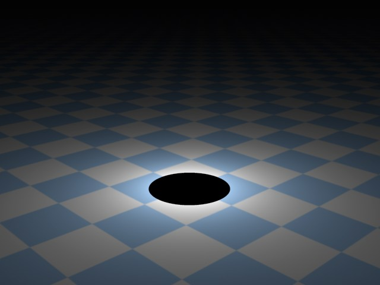
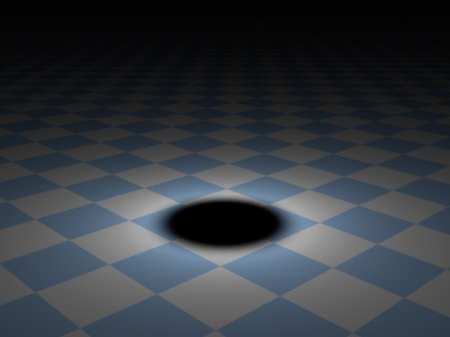
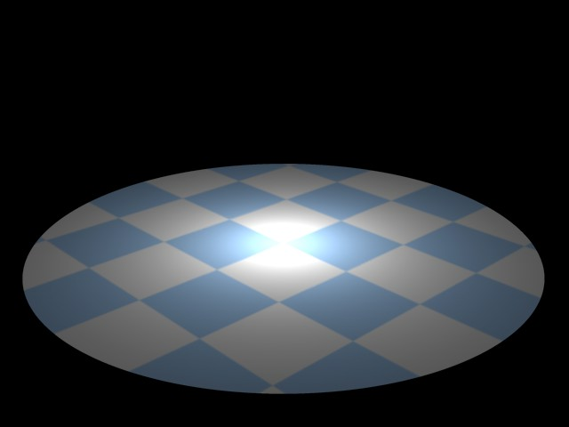
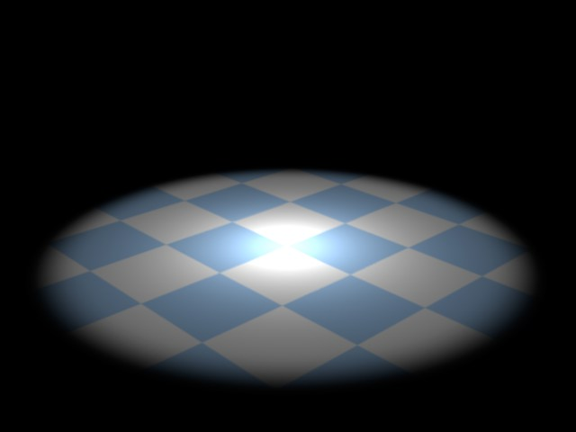

细节
使用细节标签可以调整灯光的每个属性。
这个选项可以开启灯光边缘的亮度衰减（参见内部角度 / 内部半径）。
根据使用的灯光类型，这里的参数可能是内部角度（标准聚光灯）或内部半径（平行聚光灯）。
在内部角度范围内，光源的光照度是100%。从内部到外部角度，光照度数值会从100%降到0%。
如果不启用使用内部，整个光锥内光源的光照度都是100%，这样就会产生一个硬边缘的光锥。如果内部角度为0，则光源会从光锥中心到边缘有一个平滑的过渡。
这个数值可以调节灯光的整体大小。外部角度的数值表示光源光照度的限制。
让你可以拉伸和挤压光锥的形状。标准的宽高比是1。如果增加到2，则光锥的高度会变成宽度的2倍。同样的，如果降低0.5，会让光锥高度变成宽度的一半。
光源在物体表面的强度与它们之间的距离无关（除非修改了灯光的衰减），而是取决于光线照射到物体的角度。如果入射角度为90°，物体表面受到的光照强度最大（考虑到衰减）。当入射角变小，光照强度也会降低。因此，在一个光照均匀的场景中，正常情况下会在照射的表面上看到柔和的过渡，而对比数值可以调整这个过渡。
下图展示了一系列的行星图片，它们受到灯光的照射。你可以清晰地观察到，如果对比设为0%则行星的正面和侧面被照亮的程度很低，受光面的过渡很平滑，这种过渡对比对于行星来说是不自然的。如果观察行星的照片，你会看到它受光面到暗面阴影的过渡是硬边缘，就像图中最右边的行星一样。
通过控制对比你可以调节光照表面的过渡是柔和还是锐利。
如果你需要让物体表面的过渡特别柔和，甚至可以使用负值，如图2所示。
你很可能已经遇到过这样的情况，场景中已经完美地配置了光照，但是产生的投影却与场景不相匹配。这时我们就需要投影轮廓了。你可以使用投影轮廓选项来产生投影，而不需要在场景中增加额外的光照。
如果在常规页中设置的强度为负值，那么投下不是阴影而是光线。即便这项功能没有什么实用的案例，但是有些同志在看到这里时也会对这个特性感到兴奋……
示例：
图左的场景由三个灯光照亮，灯光没有问题，但是产生的投影与与场景氛围相悖。在图右球体的上方，增加了一个投影轮廓的灯光，它能产生正确的投影，而其他三个灯光的投影是关闭的。
除了投影外，场景的光照环境保持不变。
区域光/包括区域阴影，已经完全重制了：
- 每个灯光都可以有任意形状
- 渲染时可以让区域光可见
- 区域阴影会根据区域光进行渲染
区域光有什么优点？
区域光能提供非常真实的光照效果，并且，当与区域阴影一起使用时，能产生真实的投影（但也需要更长的渲染时间）。
当使用立体区域光（立方体、球体等）时，别忘了光源体积中的物体需要更高的采样率，尤其是在使用区域阴影的时候。因为光和影是从各个方向落在物体上的。
你可以在这里设置灯光和投影的采样率：
- 漫射光照：细节标签页中的采样
- 区域阴影：投影标签页中的采样精度、最小采样值和最大采样值。
平面灯光的渲染速度要比立体灯光要快。区域阴影甚至会达到全局光照就级别的渲染时间。
产生区域光的对象会在渲染时自动变为不可见。
如果区域光使用了软阴影（阴影贴图（软阴影））或硬阴影（光线跟踪（强烈）），可能会出现不可预料的错误结果。
区域光不能发射可见的光线或体积光，但是有一个例外，形状设置为直线。
使用区域灯光后会在细节标签页中出现下列设置（当在常规标签页的投影菜单中选择区域时）：
- 形状
- 对象
- 水平、垂直、纵深尺寸 会虚拟一个完全用来生成区域阴影的区域光源。
圆盘形光源可以用来模拟例如桌面台灯或其他圆形的光源。
这项设置可以用来模拟室内光线，例如透过矩形窗户的灯光。
球体光源的效果与圆盘类似，只是光线在所有方向上的散布效果更好。
使用这个功能，将灯光设置为任意形状，从多边形对象（对象必须通过网格 | 转换 | 转为可编辑对象命令进行转换）到样条（如果样条是由多条单独的样条组成的，那么只有第一条是有效的）都可以作为光源。只需要将对象或样条拖到灯光的对象文本框里面。
一条直线形的光源（之前的版本是管道），适合用来模拟霓虹灯管。这是唯一可以作为可见灯光或体积光来渲染的区域光类型。
圆柱灯光与直线灯光类似，可以设置任意直径。
半球体适合用来模拟户外光照，因为它的光效是朝所有方向发射的，就像真实世界的天空一样。
如果在形状下拉菜单中选择了对象 / 样条，灯光的形状可以使用任意（多边形）对象或样条，只需要将它拖到灯光的对象文本框里面。
如果使用了一个带有变形效果的对象，那么会使用变形之前对象的形状。使用当前状态转对象命令可以创建一个变形后的多边形对象，这样你就可以使用它作为区域光了。
水平尺寸 [0..+∞m]
垂直尺寸 [0..+∞m]
纵深尺寸 [0..+∞m]
这里可以设置平面或立体区域光的尺寸。
这项设置可以调整圆盘或矩形区域光发出的光线。如果设置为最大值180°，光线会往区域光的四周发出，像半球一样。数值越小，边缘的光线就越少。
在一些情况下，区域光的采样结构可能会变得可见（例如，在上面的示例中使用了高光），这时物体表面看起来像是被数个光源照亮的一样。如果发生这种情况，可以增加采样值。
如果灯光散布不均匀，你也应该提高采样值（当启用增加颗粒 (慢)选项时也是一样）。尤其是在区域光修剪对象或启用了如平方倒数这种衰减模式时，容易出现这种不均匀的光线散布。
这项设置只有在选择远光灯+区域阴影时可用。
这项设置可以改变从物体投下的阴影的角度。如果设为0°则会变成硬阴影。
这时另一种避免不自然光照的方法。渲染会增加颗粒感来消除所有可见的光源构造。采样值需要足够才能避免明显的颗粒感。不过，这种颗粒效果也可能正是你想要的。
比起不启用增加颗粒 (慢)，这会显著增加渲染时间。
如果你想要渲染出区域光，可以启用这个选项。根据设置的亮度，在大部分情况下光源会被渲染为白色。
没有实际面积（表面）的区域光，如直线或样条，是无法被渲染的。
RELEASE 16
如果要在反射材质上将区域光渲染为高光（就像真实世界的反射一样），可以启用这个选项。它以及接下来的选项可以设置光源是否被渲染为高光或反射（这也可以单独在材质的反射通道层中设置）。
注意，原则上高光选项设置对整个光源都是一样（与所选择的灯光类型无关），但是这里的选项只对区域光有效。
如果想要区域光反射在其他物体表面，可以选择这个选项。没有实际面积（表面）的区域光，如直线或样条，是无法被渲染的。
使用这项设置可以调整区域光或它在其他物体上的反射的可见性亮度。只有在启用了渲染可见或反射可见时才可以使用这个选项。
正常的虚拟灯光照亮环境的亮度是连续的、线性的。但是真实世界中的光不是这样的，真实光源有光度衰减。与之类似的，CINEMA 4D 的灯光也能设置任意距离上的光度衰减。要实现这一点，在下拉列表中有几个衰减功能可供使用，如下图所示。
它们的主要特征是在光源处的亮度几乎是无限的，这非常适合用来模拟如靠近墙壁的灯泡这样的效果，这时墙壁会被照得很亮，甚至过亮。
在下面的示例中可以看见不同衰减类型的效果，其中灯光使用的是区域光，图中的小图表显示了灯光强度随距离增加的变化，图中线的弯曲表示半径衰减。
在内部半径内光线不会衰减，光线的亮度会保持不变，在这个内部半径边界之外光线就会开始衰减。
- 衰减线性和步幅：在内部半径和衰减半径之间的范围内，光源的亮度会从100%变到0%，这个半径衰减的数值表示灯光所能照亮的最大范围。
- 衰减平方倒数和Inverse Clamped：在常规标签页设置的强度会达到这个距离，在这之后强度会按距离平方的反比减弱。
这个选项只有在使用聚光灯时可用，并且只有在勾选了使用渐变且设置了不同的渐变颜色时才有效果。正常情况下颜色渐变会沿着聚光灯光源的Z轴，从渐变起点往终点延伸灯光颜色。如果启用了着色边缘衰减选项，灯光颜色还从中心往外放射状地着色。
如果启用这个选项，灯光只会朝Z轴的正方向发出光线。朝相反方向发出的光线会在X-Y平面上被修剪。
这个选项可以在渐变衰减的过程中定义多个颜色。启用后，这里的渐变会替代在常规标签页中设置的颜色。
修剪
启用近处修剪可以限制光照和可见灯光（如果有的话），对于泛光灯是放射状的，对于其他灯光则是线性的。光线不需要从光源所在处发出，而是可以从例如距离光源5米处的地方发出。
在这个效果中会用到的两个参数是起点和终点，它们表示修剪得距离。两个数值之间的差别越大，过渡就越柔和。
起点 = 90，终点 = 90。 | 起点 = 90，终点 = 150。 |
使用远处修建可以生硬地切断灯光的照明。要使用远处修剪，同样需要两个参数。这时，起点和终点这两个参数表示切断开始处和灯光完全消失处。同样地，两个数值之间的差别越大，过渡就越柔和。
起点 = 300，终点 = 300。 |
起点 = 220，终点 = 300。 |